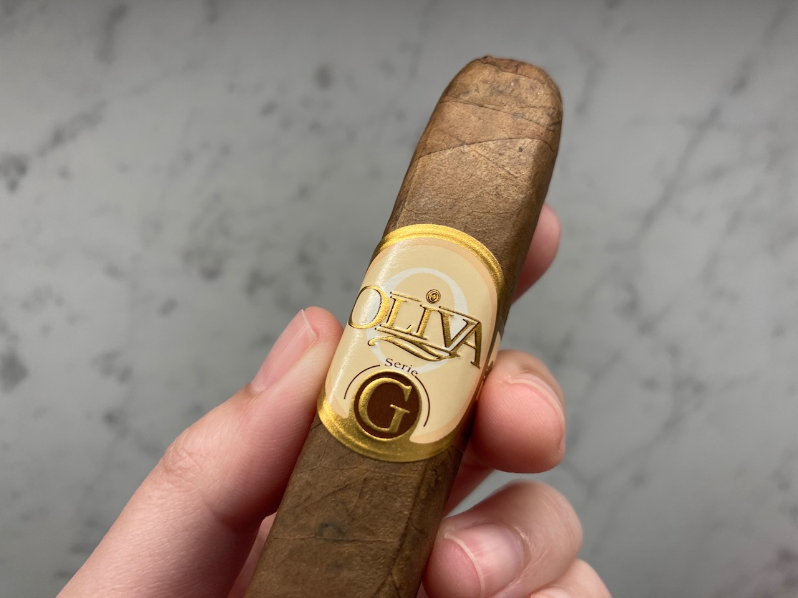
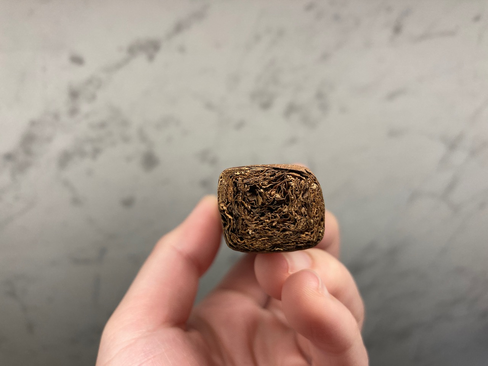
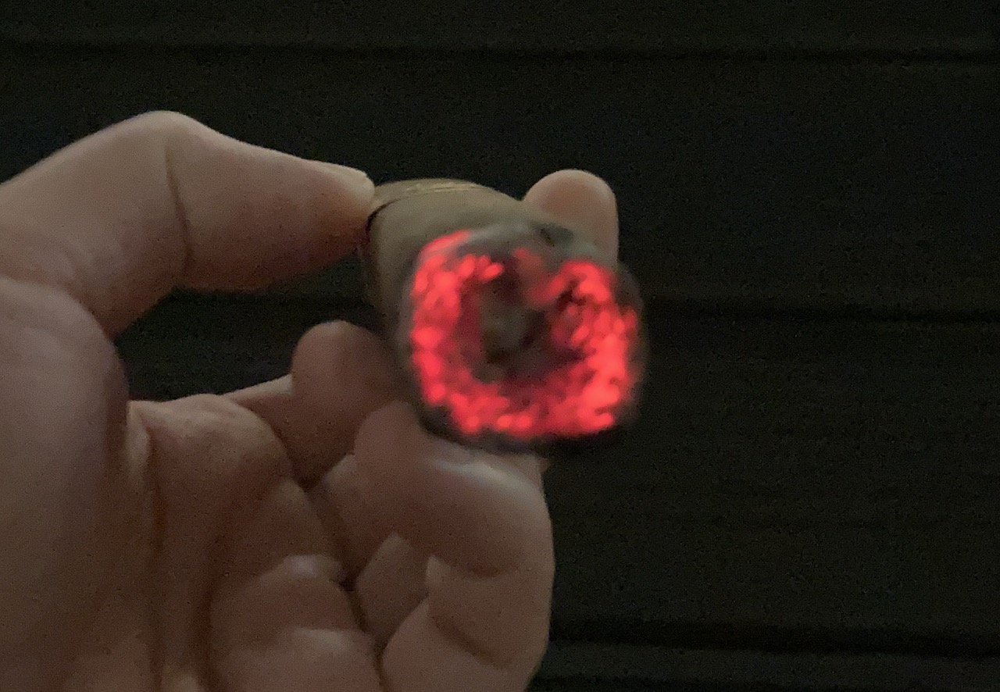
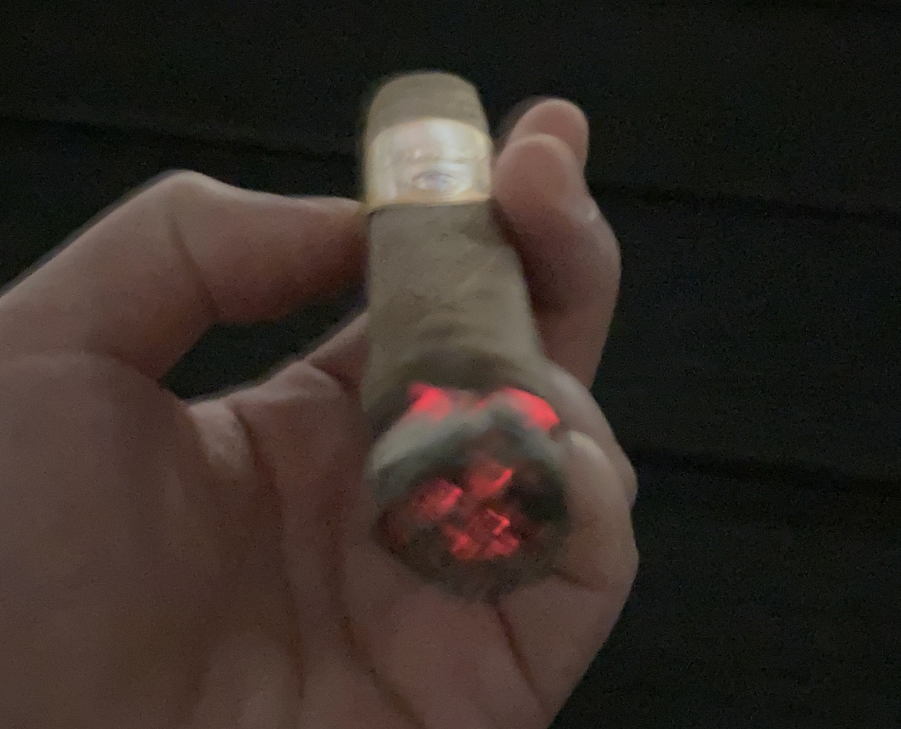
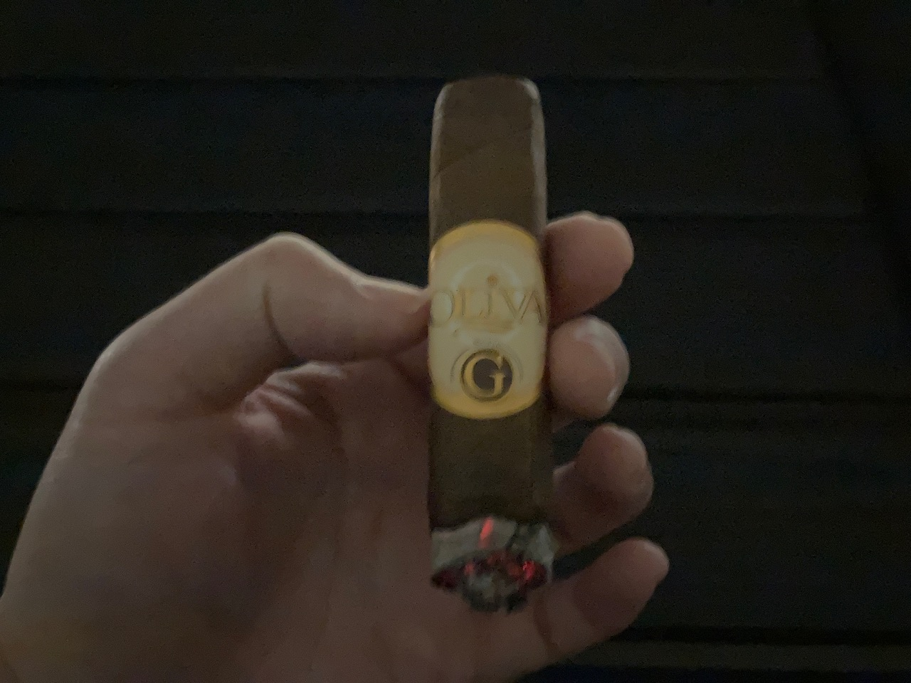
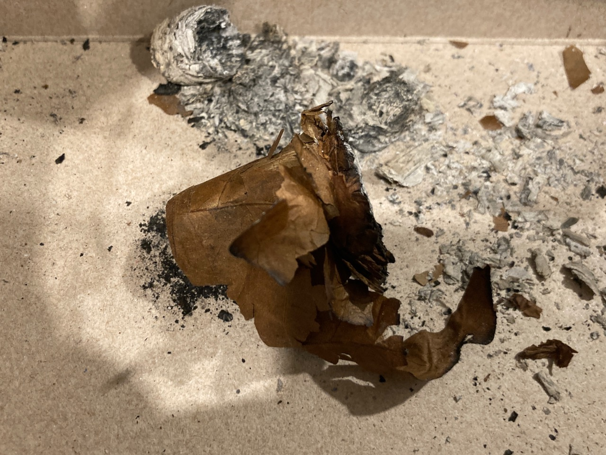
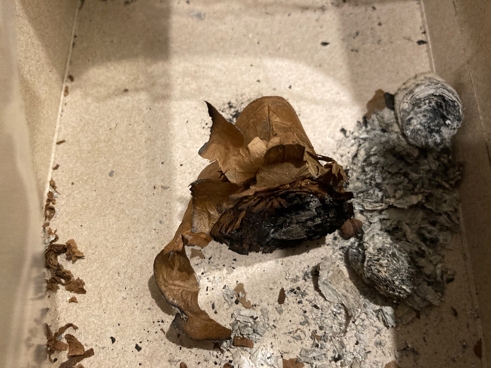

Cigar Log: Oliva Serie G Robusto (3)
This is the third Oliva G that I have tried. This one is amazing and I'm back to loving it. I really enjoy the flavour and I think it's the perfect size too. If I have a chance, I'll gladly buy a box of these. ❣
The band of the cigar is beautifully glued. This cigar is box-pressed and I think it looks really nice. You can also put it down on the table and not worry about it rolling off. It really just looks like a premium chocolate bar.
 
My phone cannot handle low light very well, but I still want to show off that beautiful cherry when you light this cigar up. I was not able to capture the time when it was fully in red, but I tried to record it down the best I can.
 
The flavour was really nice. It started with sweet coca flavours. It was smooth as always. It also has some almond nutty tobacco taste to it. I think I did overheat this cigar a little towards the middle that it tasted bitter and tarnished. However, after letting it sit for a while a take lighter draws, it's back to that cocoa sweet again. 😋

The draw is perfect for me and the burn line was ok. It did went crooked at some point, but I've only fixed it up one or two times. The other time, it just self-correct itself. The ash is beautifully white. This cigar is really a true work of art. 🥰
The smoke time of this one for me was about 40 minutes. I had this one on my balcony. The wind was blowing in the direction away from the building, so I thought to not drive out. It's a cigar that I truly adore and it's another good time spent with this Oliva Serie G.
 
That's the end of the post. If you would like to see more of my cigar review, please consider supporting this website and allow me to share more of my journey with you. Thank you as always and I hope to see you in the next post! ☀️